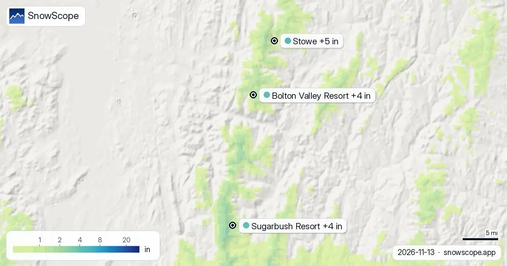
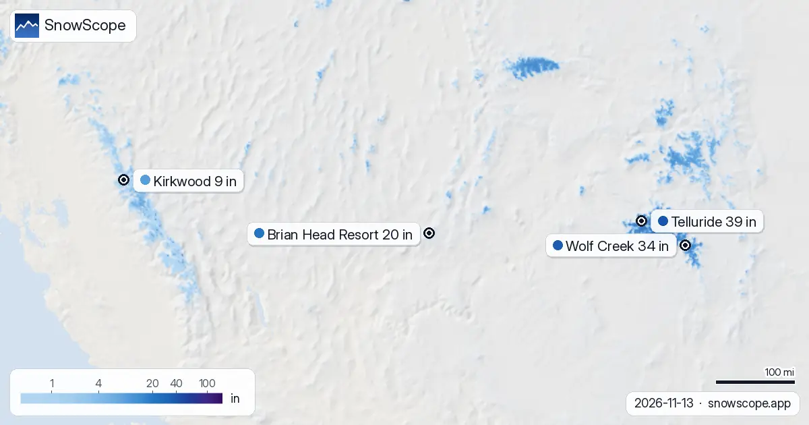
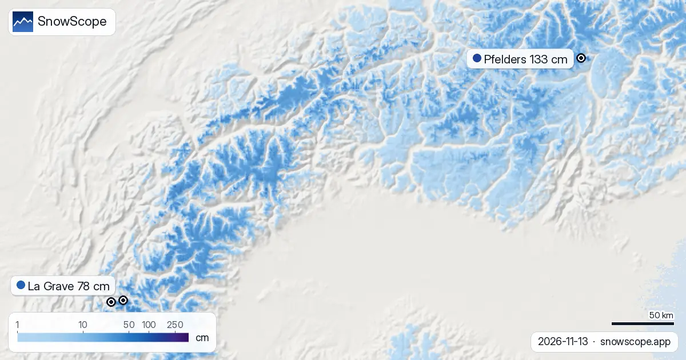

Schneeberichte · Schneefallgrenze
Tägliche Schneeberichte für Skifahrer: wo der Schnee liegt, was kommt und wo du fahren kannst, aus der SnowScope-Schneekarte und Messstationen. Jede Zahl stammt aus den Daten des Tages.

Von jetzt bis zum 16. November erwarten wir 5 in (12 cm) in Stowe, 4 in (11 cm) in Bolton Valley Resort und 4 in (10 cm) in Sugarbush Resort. Unsere …

Von jetzt bis zum 16. November erwarten wir 13 in (34 cm) in Bear Valley, 13 in (34 cm) in Dodge Ridge und 13 in (33 cm) in Badger Pass. Ein Wort zu …

39 in (99 cm) in den oberen Hängen: Deshalb steht Telluride oben auf unserer Liste. Schneehöhe heute, Neuschnee der letzten 72 Stunden, Prognose: …

Revelstoke Schneeprognose: bis zu 10–21 cm bis zum 16. November erwartet (Westkanada). In Whistler Blackcomb liegt die Nullgradgrenze am 13. November …

Dévoluy Schnee-Ausblick: auf Kurs für 24–32 cm bis zum 16. November (Alpen). Bis zum 16. November ergibt unsere Prognose 35 cm in Orcières Merlette, …

Unsere Tipps sind La Grave, Pfelders und Les Deux Alpes: Wir haben die heutige Schneehöhe, den Neuschnee der letzten 72 Stunden und die Prognose …

Die Nullgradgrenze entscheidet, ob die Berge Schnee speichern oder Regen abgeben: In den nächsten Tagen sieht unsere Prognose sie in den Pyrenäen …

Unser Schneemodell prognostiziert, dass Whistler Blackcomb bis Montag, den 16. November 2026, 88 cm Neuschnee erhalten wird und damit weltweit führend ist.

Unsere Prognose hat die Nullgradgrenze im Nordosten der USA in den kommenden Tagen zwischen 0 ft (0 m) und 4.593 ft (1.400 m). Am Donnerstag, 12. …

Zwischen 1.380 m und 3.410 m: Dort sieht unsere Prognose die Nullgradgrenze in Westkanada in den nächsten Tagen. In den wärmsten Stunden steigt die …

Die Karten von heute blicken zwei Wochen voraus in den Pyrenäen, 13. November bis 26. November. Sie stammen aus die beiden globalen Modelle, die zwei …

Wo schneit es im Nordosten der USA zwischen dem 13. November und dem 26. November, und wie viel? Wir haben die beiden globalen Modelle, die zwei …

Vierzehn Tage Neuschnee auf einer Karte, 13. November bis 26. November, für jeden Berg in Westkanada: das erwarten die beiden globalen Modelle, die …

In Telluride ändert die Höhe alles: Unser Modell zeigt 0 in (0 cm) im Tal (8.734 ft / 2.662 m), 2 in (6 cm) an der Mittelstation (10.620 ft / …

Hier sind die neuen Karten der nächsten zwei Wochen in den Alpen, 13. November bis 26. November: der erwartete Neuschnee im Gelände, abgelesen aus …

Hier sind die neuen Karten der nächsten zwei Wochen im Atlas (Marokko), 13. November bis 26. November: der erwartete Neuschnee im Gelände, abgelesen …

Unsere Zwei-Wochen-Karten zeigen, wo im US-Westen zwischen dem 13. November und dem 26. November Neuschnee fallen sollte, nach die beiden globalen …

Kirkwood Schnee-Ausblick: auf Kurs für 16 in bis zum 15. November (US-Westen). Bis zum 15. November ergibt unsere Prognose 23 in (58 cm) in Mt. …

Mount Cain Alpine Park: Wie viel Schnee kommt? 37 cm bis zum 15. November. Wie viel Schnee kommt in Westkanada, und wo? Bis zum 15. November ergibt …

Schneebericht in den Pyrenäen, 12. November. Mit Blick auf den 15. November bringt die Prognose 33 cm in Cauterets Cirque du Lys, 29 cm in …

Les Deux Alpes, Schneeprognose im regionalen Vergleich: 51 cm bis zum 14. November. Die Schneefläche schrumpfte von 45.820 km² am 9. November auf …

Schneebericht in den Alpen, 11. November. Drei Zutaten, eine Auswahl: Heutige Schneehöhe, Neuschnee der letzten 72 Stunden und Prognose zeigen auf …

Schneebericht im Nordosten der USA, 11. November. Bis zum 14. November ergibt die Prognose 15 in (38 cm) in Okemo Mountain, 12 in (30 cm) in Stratton …

In den nächsten Tagen sollte die Nullgradgrenze im US-Westen laut unserer Prognose zwischen 8.333 ft (2.540 m) und 13.780 ft (4.200 m) pendeln. In …

Schneebericht im US-Westen, 11. November. Bis zum 14. November ergibt die Prognose 17 in (43 cm) in Mt. Shasta Ski Park, 15 in (39 cm) in Kirkwood …

Wo solltest du im US-Westen Ski fahren? Drei Zutaten, eine Auswahl: Heutige Schneehöhe, Neuschnee der letzten 72 Stunden und Prognose zeigen auf …

Wir haben den Schnee am Boden, den Neuschnee der letzten 72 Stunden und das, was die Prognose dazugibt, abgewogen und Whistler Blackcomb, Tweedsmuir …

Unser Schneemodell prognostiziert bis Samstag, 14. November 2026, bis zu 58 cm Neuschnee für La Grave, Frankreich. Sieh, wo sonst noch Schnee erwartet wird.

Die Nullgradgrenze im Nordosten der USA, nächste Tage: 1.936 ft (590 m) bis 6.037 ft (1.840 m). Wärmste Stunden: Schneefallgrenze etwa 984 ft (300 m) …

Der Schnee hat sich seit dem 8. November zurückgezogen, von 676 sq mi (1.750 km²) auf heute 42 sq mi (110 km²); für den 13. November ergibt unsere …

Whistler Blackcomb bekam in einer Woche 75 cm Neuschnee am Gipfel, dann einen warmen Sturm mit 124 mm Wasser. Ein einfacher Leitfaden zu Unterlage, Neuschnee, Regen und Harschdeckel.

Die Nullgradgrenze in den Pyrenäen, nächste Tage: 2.420 m bis 3.710 m. Die Schneefallgrenze, etwa 300 m tiefer, erreicht ihren Höchstwert von 3.400 m …

Bis zu 37 cm: So viel gibt unsere Prognose Piau-Engaly bis zum 13. November. Bis zum 13. November ergibt unsere Prognose 37 cm in Piau-Engaly, 21 cm …

Jeden Tag listen wir die Skigebiete, die den meisten Neuschnee bekommen sollen, für die nächsten 24 Stunden und bis zum 13. November, in Europa, …


50 cm in den oberen Hängen: Deshalb steht La Grave oben auf unserer Liste. Wir haben Schneehöhe, Neuschnee der letzten 72 Stunden und Prognose …

Unsere Prognose hat die Nullgradgrenze in den Pyrenäen in den kommenden Tagen zwischen 2.610 m und 3.840 m. In der wärmsten Zeit des Tages steigt die …

Wo solltest du in den nächsten Tagen sein? Hier sind die Skigebiete mit dem meisten prognostizierten Neuschnee für die nächsten 24 Stunden und bis …


Ein feuchter Pazifiksturm: 92 cm Neuschnee auf Whistlers oberen Pisten vom 8. bis 10. November, Regen unterhalb von etwa 1.620 m.

Milde Luft bei den nächsten Niederschlägen: Die Schneefallgrenze liegt meist zwischen 2.190 und 2.850 m. Karte, Diagramm und Animation.

Schneefallgrenze nahe 3.710 m vom 8. bis 12. November: Regen in Oukaïmeden und Imlil, Schnee auf dem Gipfel des Toubkal. Karte und Grafik.

Bis zum 10. November ergibt unsere Prognose 103 cm in Whistler Blackcomb, 99 cm in Ski Callaghan und 74 cm in Mount Cain Alpine Park. Die Werte der …

Bis zum 10. November ergibt unsere Prognose 21 in (53 cm) in Mt Baker, 7 in (18 cm) in Mt. Hood Meadows und 6 in (14 cm) in Hurricane Ridge. Die …

Rund 65 mm am Toubkal bis 12. November, aber die Nullgradgrenze bleibt bei etwa 4.000 m: Regen in Oukaïmeden und in den Tälern, Schnee nur ganz oben.

Bis zum 10. November ergibt unsere Prognose 36 cm in Orcières Merlette, 33 cm in Les Deux Alpes und 32 cm in La Grave. Die Werte der Skigebiete sind …

Die heutige Tabelle sortiert die Skigebiete Europas, Marokkos und Nordamerikas nach prognostiziertem Neuschnee für die nächsten 24 Stunden und bis …

Bis zum 9. November ergibt unsere Prognose 13 in (33 cm) in Mt Baker, 5 in (12 cm) in Hurricane Ridge und 4 in (10 cm) in Mt. Hood Meadows. Die Werte …

Bis zum 9. November ergibt unsere Prognose 4 in (11 cm) in Ski Eldorado und 4 in (10 cm) in Tuckerman Ravine. Die Werte der Skigebiete sind …

Bis zum 9. November ergibt unsere Prognose 74 cm in Whistler Blackcomb, 63 cm in Ski Callaghan und 50 cm in Mount Cain Alpine Park. Die Werte der …

Wir haben Schneehöhe, Neuschnee der letzten 72 Stunden und Prognose kombiniert und Isola 2000, Artesina und Bonneval-sur-Arc ausgewählt. Von diesen …

Wir haben Schneehöhe, Neuschnee der letzten 72 Stunden und Prognose kombiniert und Aramón Cerler, Rasos de Peguera und Masella ausgewählt. Von diesen …

Wie viel Schnee gewinnen die Berge? Unsere Tabelle zeigt die Skigebiete mit dem meisten prognostizierten Neuschnee für die nächsten 24 Stunden und …

Bis zum 8. November ergibt unsere Prognose 21 cm in Saas Grund, 18 cm in Grindelwald und 18 cm in Pescegallo. Die Werte der Skigebiete sind …

Wir haben Schneehöhe, Neuschnee der letzten 72 Stunden und Prognose kombiniert und Artesina, Isola 2000 und Riserva Bianca ausgewählt. Von diesen …

Wir haben Schneehöhe, Neuschnee der letzten 72 Stunden und Prognose kombiniert und Rasos de Peguera, Aramón Cerler und Masella ausgewählt. Von diesen …

Bis zum 8. November ergibt unsere Prognose 17 in (42 cm) in Mt Baker und 5 in (13 cm) in Hurricane Ridge. Die Werte der Skigebiete sind …

Wir haben Schneehöhe, Neuschnee der letzten 72 Stunden und Prognose kombiniert und Kendall Mountain, Telluride und Mt Baker ausgewählt. Von diesen …

Bis zum 8. November ergibt unsere Prognose 94 cm in Whistler Blackcomb, 93 cm in Ski Callaghan und 70 cm in Tweedsmuir Ski Club. Die Werte der …

Unser Schneemodell für den 5. November 2026 prognostiziert bis Sonntag bis zu 94 cm Neuschnee in Westkanada, mit erheblichem Schneefall auch in den Alpen und im Westen der USA.

Wir haben Schneehöhe, Neuschnee der letzten 72 Stunden und Prognose kombiniert und Crissolo, Prali und La Grave ausgewählt. Von diesen Skigebieten …

Wir haben Schneehöhe, Neuschnee der letzten 72 Stunden und Prognose kombiniert und Masella, Cauterets Cirque du Lys und Aramón Cerler ausgewählt. Von …

Bis zum 7. November ergibt unsere Prognose 17 in (44 cm) in Mt Baker, 6 in (14 cm) in Crystal Mountain und 6 in (14 cm) in Stevens Pass. Die Werte …

Bis zum 7. November ergibt unsere Prognose 48 cm in Ski Callaghan, 47 cm in Whistler Blackcomb und 34 cm in Mount Cain Alpine Park. Die Werte der …

Wir haben Schneehöhe, Neuschnee der letzten 72 Stunden und Prognose kombiniert und Mount Cain Alpine Park, Whistler Blackcomb und Silver Star …

Die heutige Tabelle sortiert die Skigebiete Europas, Marokkos und Nordamerikas nach prognostiziertem Neuschnee für die nächsten 24 Stunden und bis …

Bis zum 6. November ergibt unsere Prognose 37 cm in Chabanon, 34 cm in Dévoluy und 33 cm in Chaillol. Die Werte der Skigebiete sind Modellschätzungen …

Wir haben Schneehöhe, Neuschnee der letzten 72 Stunden und Prognose kombiniert und Masella, Estació d'esquí de Port-Ainé und Cauterets Cirque du Lys …

Wir haben Schneehöhe, Neuschnee der letzten 72 Stunden und Prognose kombiniert und Silverton Mountain, Telluride und Lee's Ski Hill ausgewählt. Von …

Bis zum 6. November ergibt unsere Prognose 33 cm in Ski Callaghan, 31 cm in Mount Cain Alpine Park und 25 cm in Whistler Blackcomb. Die Werte der …

Jeden Tag listen wir die Skigebiete, die den meisten Neuschnee bekommen sollen, für die nächsten 24 Stunden und bis zum 6. November, in Europa, …